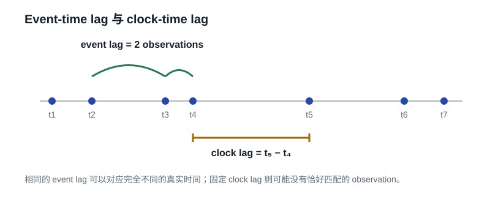

定义、非参数估计、连续时间模型与交易残差诊断
2026-08-25
非规则采样并不会使 autocorrelation 失去定义；它使“lag”重新变成真正的时间长度，并迫使我们说明如何从不规则观测对中估计这个对象。本文从两个不同的 estimand 开始：clock-time ACF 与 event-time ACF。随后统一介绍 pair-product、slotting/DCF、Gaussian-kernel、S-ACF、spectral 与 OU/IAR/CARMA 路线，重点说明每种方法究竟平均了哪些 observation pairs、需要什么假设、在什么地方会产生偏差。最后给出面向 corporate-bond trade residual 的完整工作流、合成实验和可复用 Python 实现。
对 irregularly sampled residuals，不能只问“ACF 怎么算”，而要按下面的顺序问：
假设我们观测到
\[(t_1,X_1),\ldots,(t_n,X_n),\qquad t_1<t_2<\cdots<t_n,\]
但相邻间隔
\[\Delta_i=t_i-t_{i-1}\]
并不相等。
在 regular sampling 下，教科书把 sample ACF 写成
\[\widehat\rho(k)=\frac{\sum_{i=1}^{n-k}(X_i-\bar X)(X_{i+k}-\bar X)}{\sum_{i=1}^n(X_i-\bar X)^2}.\]
之所以整数 lag \(k\) 可以被解释成时间，是因为每一步都等长：
\[t_{i+k}-t_i=k\Delta.\]
一旦 sampling irregular，\(k=1\) 所对应的时间差可能是 2 秒、8 分钟或 4 小时。普通 .shift(1) 并没有“算错”；它只是回答了一个不同的问题。

本文的第一原则是：先定义 estimand，再选 estimator。
把数据看成连续时间过程 \(X(t)\) 在随机或不规则时点上的观测。若 \(X(t)\) 二阶平稳，令
\[\mu=E[X(t)],\]
\[\gamma_c(\tau)=\operatorname{Cov}\{X(t),X(t+\tau)\}=E[(X(t)-\mu)(X(t+\tau)-\mu)],\]
以及
\[\rho_c(\tau)=\frac{\gamma_c(\tau)}{\gamma_c(0)}.\]
这里的 \(\tau\) 是真实时间，例如 5 分钟或 1 小时。这个定义与 sampling 是否 regular 无关。Edelson and Krolik 的 DCF 工作正是从连续时间 correlation function 出发，再处理“不恰好存在 \(t_i+\tau\) 观测”的估计问题 (Edelson 和 Krolik 1988)。
Clock-time ACF 回答：
当前 residual 为正以后，经过 30 分钟，残差是否仍倾向于为正？
现在把观测顺序本身当作时间轴：
\[Y_i=X(t_i).\]
则 event-time ACF 可定义为
\[\rho_e(k)=\operatorname{Corr}(Y_i,Y_{i+k}).\]
它回答：
当前 residual 为正以后，再过 \(k\) 笔 observation，残差是否仍倾向于为正？
因此 .shift(1) 对应 \(\rho_e(1)\)，并不对应一个固定的 \(\rho_c(\tau)\)。
假设 sampling times 与过程独立，并且 clock-time ACF 为 \(\rho_c(\tau)\)。令
\[S_{i,k}=t_{i+k}-t_i\]
表示第 \(i\) 个 observation 到第 \(i+k\) 个 observation 的真实时间间隔。那么在适当平稳条件下，
\[\rho_e(k)=E\left[\rho_c(S_{i,k})\right].\]
所以 event-time correlation 是 clock-time correlation 在随机累计 duration上的平均，不是简单地把平均时间间隔代进去。
例如 Ornstein–Uhlenbeck（OU）过程满足
\[\rho_c(\tau)=e^{-\lambda\tau}.\]
于是
\[\rho_e(1)=E[e^{-\lambda\Delta_i}],\]
一般并不等于
\[e^{-\lambda E[\Delta_i]}.\]
由于 \(e^{-\lambda x}\) 是凸函数，Jensen 不等式给出
\[E[e^{-\lambda\Delta_i}]\ge e^{-\lambda E[\Delta_i]}.\]
这说明“用平均 trade gap 把 event lag 换算成 clock lag”可能系统性失真。
上面的关系要求 observation times 对 \(X(t)\) 足够外生。金融交易通常不满足：volatility、news、inventory pressure 和 price disagreement 都会同时改变交易强度与 residual behavior。Engle and Russell 将 intertrade durations 本身建模为随机过程 (Engle 和 Russell 1998)；在更一般的 longitudinal setting 中，若 observation times 依赖 outcome，忽略这一点可能造成偏差 (Chen, Ning, 和 Cai 2015)。
因此对 trade residual 更稳妥的表述是：
\[\rho_{\text{obs}}(\tau)=\operatorname{Corr}\bigl(e_i,e_j\mid t_j-t_i\approx\tau,\;i,j\text{ 均被观测}\bigr).\]
它是一个有用的 operational diagnostic，但不应自动被解释为外生时钟下 latent fair-value error 的结构参数。
先假设 \(X_i\) 已经中心化并标准化：
\[z_i=\frac{X_i-\mu}{\sigma}.\]
对每个 \(i<j\) 定义
\[d_{ij}=t_j-t_i,\qquad U_{ij}=z_i z_j.\]
若 sampling 外生且过程平稳，则直觉上
\[E[U_{ij}\mid d_{ij}=\tau]=\rho_c(\tau).\]
因此 irregular ACF 的核心问题可以写成一个一维 smoothing problem：
\[U_{ij}=m(d_{ij})+\varepsilon_{ij},\qquad m(\tau)=\rho_c(\tau).\]
这条表达式把后面的 slotting、kernel 和 spline estimator 统一起来了。
若目标 lag 是 30 分钟，但数据中几乎没有满足
\[t_j-t_i\approx30\text{ min}\]
的同 series pairs，那么 \(\rho_c(30\text{ min})\) 不能由数据直接估计。此时只有三种诚实选择：
“先 forward-fill 到规则网格”不是第四种无假设选择；它已经隐含了 piecewise-constant path assumption。
假设一个 observation \(z_i\) 同时与 50 个后续 observations 构成 eligible pairs，那么这 50 个 pair products 共享同一个 \(z_i\)。所以
\[\{U_{ij}\}\]
之间高度依赖。原始 pair 数量 \(M\) 可以描述计算规模和 support，却不能直接放进 \(1/\sqrt M\) 类型标准误。